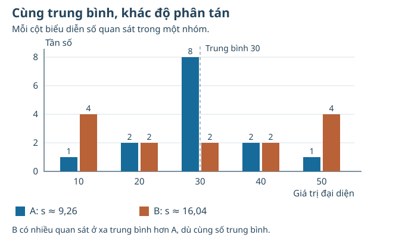

Bài 10. Phương sai và độ lệch chuẩn
TOÁN 12 · CHƯƠNG III · KIẾN THỨC SGK KNTT · TẬP MỘT
Đo mức độ phân tán quanh số trung bình của mẫu ghép nhóm; dùng kết quả để đánh giá độ ổn định và so sánh rủi ro trong những điều kiện thích hợp.
1. Khám phá kiến thức
1.1. Phương sai và độ lệch chuẩn
Hai vận động viên có thời gian chạy trung bình cùng bằng 11 giây. Một người thường chạy gần 11 giây, người kia lúc nhanh hơn nhiều, lúc chậm hơn nhiều. Ai có thành tích ổn định hơn? Ở Bài 9, khoảng biến thiên nhìn hai đầu, khoảng tứ phân vị nhìn phần giữa của dữ liệu. Bây giờ ta cần một số đo sử dụng thông tin của mọi nhóm và cho biết dữ liệu trải rộng quanh số trung bình như thế nào.
Hãy nhớ lại mẫu gốc gồm ba thời gian \(9,11,13\) giây, có trung bình \(11\). Các độ lệch so với trung bình là \(-2,0,2\). Nếu cộng trực tiếp, kết quả bằng \(0\); hai độ lệch trái dấu đã triệt tiêu nhau, dù hai lần chạy có kết quả khác 11 giây. Bình phương các độ lệch cho \(4,0,4\), rồi lấy trung bình, được \(8/3\) giây². Đó là phương sai. Lấy căn bậc hai của phương sai cho độ lệch chuẩn \(\sqrt{8/3}\approx1{,}63\) giây, trở lại cùng đơn vị với thời gian chạy.
Trong bảng ghép nhóm, ta chỉ biết mỗi nhóm có bao nhiêu quan sát, không biết chính xác giá trị của từng quan sát. Chẳng hạn thời gian thực hiện một công việc được ghi như sau:
| Thời gian (phút) | \([0;10)\) | \([10;20)\) | \([20;30)\) |
|---|---|---|---|
| Số lượt \(m_i\) | 2 | 5 | 3 |
| Giá trị đại diện \(x_i\) | 5 | 15 | 25 |
Ta chọn trung điểm mỗi nhóm làm giá trị đại diện như đã học ở lớp 11. Để ước lượng, xem hai lượt trong nhóm đầu như hai giá trị 5, năm lượt ở nhóm giữa như năm giá trị 15 và ba lượt ở nhóm cuối như ba giá trị 25. Đây là một mẫu thay thế dùng cho tính toán, không phải khôi phục chính xác dữ liệu ban đầu.
Có \(n=2+5+3=10\) lượt. Trung bình ghép nhóm là [ \overline{x}=\frac{2\cdot5+5\cdot15+3\cdot25}{10}=16\text{ phút}. ] Không cộng ba trung điểm rồi chia 3, vì ba nhóm có số lượt khác nhau.
Tính độ lệch mỗi giá trị đại diện so với 16, bình phương, rồi nhân tần số. Cột cuối cho tổng bình phương độ lệch của các lượt được đại diện bởi nhóm đó.
| \(x_i\) | \(m_i\) | \(x_i-\overline{x}\) | \((x_i-\overline{x})^2\) | \(m_i(x_i-\overline{x})^2\) |
|---|---|---|---|---|
| 5 | 2 | \(-11\) | 121 | 242 |
| 15 | 5 | \(-1\) | 1 | 5 |
| 25 | 3 | 9 | 81 | 243 |
| Tổng | 10 | 490 |
Chia tổng 490 cho 10 quan sát, không phải 3 nhóm: [ s^2=\frac{490}{10}=49\text{ phút}^2. ] Vì mọi bình phương đều không âm, phương sai không âm. Những giá trị ở xa trung bình có bình phương độ lệch lớn; nhóm đông người đóng góp nhiều lần vào tổng này.
Độ lệch chuẩn là \(s=\sqrt{49}=7\) phút. Kết quả cho biết mức độ phân tán quanh trung bình 16 phút, chứ không có nghĩa mọi lượt đều lệch đúng 7 phút hay mọi lượt đều nằm trong khoảng từ 9 đến 23 phút. Chẳng hạn nhóm đầu có đại diện 5, đã nằm ngoài khoảng đó.
Vận dụng. Thời gian thực hiện một thao tác (giây) có bảng sau. Tính số trung bình, phương sai và độ lệch chuẩn của mẫu ghép nhóm.
| Thời gian | \([10;14)\) | \([14;18)\) | \([18;22)\) |
|---|---|---|---|
| Số lượt | 3 | 4 | 1 |
Đối chiếu
Giá trị đại diện là \(12,16,20\), cỡ mẫu \(n=8\).
[ \overline{x}=\frac{3\cdot12+4\cdot16+20}{8}=15. ] Các độ lệch tương ứng là \(-3,1,5\), nên [ s^2=\frac{3\cdot9+4\cdot1+1\cdot25}{8}=7\text{ giây}^2, \qquad s=\sqrt7\approx2{,}65\text{ giây}. ]
Kiểm lỗi
Nếu lấy trung bình các trung điểm mà không nhân tần số, em sẽ nhận 16 thay vì 15. Nếu cộng độ lệch có dấu, tổng có trọng số bằng \(0\). Hãy bình phương trước khi cộng và chia tổng số lượt.
Công thức tính nhanh. Với bảng dài, việc tính từng độ lệch có thể tốn công. Khai triển \((x_i-\overline{x})^2=x_i^2-2x_i\overline{x}+\overline{x}^2\). Vì \(\sum m_ix_i=n\overline{x}\) và \(\sum m_i=n\), nên
Kiểm lại bảng đầu: tổng \(m_ix_i^2\) là \(2\cdot25+5\cdot225+3\cdot625=3050\). Chia cho 10 được 305, trừ \(16^2=256\), còn 49, đúng kết quả ban đầu. Hai cách tính không phải hai định nghĩa khác nhau; công thức tính nhanh là biến đổi đại số của công thức gốc.
Nếu trung bình không nguyên, giữ phân số hoặc đủ chữ số trong các bước trung gian. Trừ hai số lớn gần nhau sau khi làm tròn có thể gây sai số đáng kể. Một phương sai âm không phải kết quả hợp lệ; kiểm lại phép tính, nếu cần dùng cách tính trực tiếp từ bình phương độ lệch.
Vận dụng. Một thiết bị đo được kiểm tra 10 lần, với các kết quả ghép nhóm:
| Kết quả (cm) | \([8;10)\) | \([10;12)\) | \([12;14)\) |
|---|---|---|---|
| Tần số | 1 | 8 | 1 |
Tính độ lệch chuẩn bằng công thức rút gọn. Theo tiêu chí giả định, cần hiệu chỉnh thiết bị nếu độ lệch chuẩn ghép nhóm lớn hơn \(1\) cm. Có cần hiệu chỉnh theo tiêu chí này không?
Đối chiếu
Trung điểm là \(9,11,13\); trung bình bằng 11 cm. Tổng \(m_ix_i^2=81+8\cdot121+169=1218\), nên \(s^2=1218/10-121=0{,}8\) cm². \(s=\sqrt{0{,}8}\approx0{,}89\) cm, nhỏ hơn 1 cm. Không cần hiệu chỉnh theo tiêu chí đã cho.
Kiểm bằng công thức gốc: chỉ hai nhóm biên có độ lệch khác 0, mỗi nhóm đóng góp 4; chia 10 cũng được \(0{,}8\).
Kiểm lỗi
Phải so độ lệch chuẩn, không so phương sai với ngưỡng có đơn vị cm. Đây là tiêu chí về độ ổn định của các kết quả đo, không tự chứng minh máy đo chính xác so với giá trị thật.
1.2. Sử dụng phương sai, độ lệch chuẩn đo độ rủi ro
Giả sử hai phương án kinh doanh có vốn đầu tư bằng nhau và được theo dõi trong cùng thời gian. Số tiền thu được mỗi tháng (triệu đồng) được ghép nhóm như sau:
| Số tiền | \([5;15)\) | \([15;25)\) | \([25;35)\) | \([35;45)\) | \([45;55)\) |
|---|---|---|---|---|---|
| Phương án A | 1 | 2 | 8 | 2 | 1 |
| Phương án B | 4 | 2 | 2 | 2 | 4 |

Tần số của mỗi mẫu đối xứng quanh nhóm có đại diện 30, nên \(\overline{x}_A=\overline{x}_B=30\) triệu đồng. Các giá trị đại diện có độ lệch \(-20,-10,0,10,20\). Tính phương sai:
[ s_A^2=\frac{1\cdot400+2\cdot100+8\cdot0+2\cdot100+1\cdot400}{14} =\frac{1200}{14}, ] [ s_B^2=\frac{4\cdot400+2\cdot100+2\cdot0+2\cdot100+4\cdot400}{14} =\frac{3600}{14}. ]
Do đó \(s_A\approx9{,}26\), \(s_B\approx16{,}04\) triệu đồng. Theo tiêu chí biến động số tiền hàng tháng, B rủi ro hơn A mặc dù cùng số trung bình. Phương sai của B gấp 3 lần A nhưng độ lệch chuẩn chỉ gấp \(\sqrt3\) lần.
Cần hiểu đúng từ “rủi ro”: ở đây đo mức độ biến động quanh trung bình, bao gồm cả tháng thu thấp và tháng thu cao. Độ lệch chuẩn không tự cho biết xác suất thua lỗ, khoản lỗ lớn nhất, hoặc mức an toàn của một phương án trong tương lai.
Nếu quy mô hai phương án rất khác nhau, độ lệch chuẩn tuyệt đối có thể gây hiểu nhầm. Ví dụ một đơn vị có lợi nhuận trung bình 25 triệu đồng/tháng và độ lệch chuẩn 5 triệu; đơn vị kia trung bình 500 triệu và độ lệch chuẩn 30 triệu. Đơn vị thứ hai biến động tuyệt đối lớn hơn, nhưng 30 triệu chỉ bằng 6% mức trung bình của nó, còn 5 triệu bằng 20% mức trung bình của đơn vị thứ nhất. Không nên chỉ dựa vào phương sai hoặc độ lệch chuẩn tuyệt đối để kết luận đơn vị nào rủi ro hơn về tương đối.
Đọc thêm — Hệ số biến thiên. SGK giới thiệu \(CV=s/\overline{x}\). Khi số trung bình dương có ý nghĩa và đại lượng được đo trên thang có gốc 0 thực sự, hệ số này cho biết mức phân tán tương đối so với trung bình, không có đơn vị (có thể biểu diễn thành phần trăm). Hai giá trị trên cho \(CV=20\%\) và \(6\%\). Chẳng hạn, 0 đồng nghĩa là không có số tiền đó, nhưng 0°C không có nghĩa là không có nhiệt độ: đổi sang độ Fahrenheit sẽ làm thay đổi tỉ lệ tính được. Vì vậy không dùng hệ số này để so sánh nhiệt độ theo thang Celsius. Không áp dụng máy móc khi trung bình bằng 0, gần 0 hoặc âm; đây cũng không phải thước đo mọi loại rủi ro.
Vận dụng. Hai cơ sở có lợi nhuận trung bình và độ lệch chuẩn lần lượt là:
| Cơ sở | Trung bình (triệu đồng/tháng) | Độ lệch chuẩn (triệu đồng) |
|---|---|---|
| X | 40 | 8 |
| Y | 400 | 32 |
Có nên kết luận Y rủi ro hơn chỉ vì \(32>8\) không? Nếu xét mức biến động tương đối theo phần đọc thêm, hai hệ số biến thiên bằng bao nhiêu?
Đối chiếu
Không nên kết luận rủi ro tương đối chỉ từ độ lệch chuẩn vì hai mức trung bình chênh nhau 10 lần. Y có độ phân tán tuyệt đối lớn hơn; theo hệ số biến thiên, \(CV_X=8/40=20\%\), \(CV_Y=32/400=8\%\). X biến động tương đối lớn hơn theo thước đo này. Muốn đánh giá toàn diện còn cần biết vốn, khả năng chịu lỗ và các điều kiện khác.
Kiểm lỗi
Không nhầm số tiền biến động với tỉ lệ biến động. Chỉ so trực tiếp độ lệch chuẩn để đánh giá độ rủi ro khi bối cảnh và mức trung bình đủ tương thích; nếu đề chỉ hỏi độ phân tán tuyệt đối, vẫn có thể so \(s\) của hai mẫu cùng đơn vị.
2. Kiến thức SGK
2.1. Phương sai và độ lệch chuẩn
Xét mẫu ghép nhóm có các nhóm \([a_i;a_{i+1})\), tần số \(m_i\), \(i=1,\ldots,k\); \(n=\sum_{i=1}^k m_i>0\). Giá trị đại diện \(x_i=(a_i+a_{i+1})/2\), số trung bình \(\overline{x}=\frac1n\sum_{i=1}^k m_ix_i\).
Phương sai là trung bình có trọng số của các bình phương độ lệch so với số trung bình. \(s^2\ge0\); đơn vị là bình phương đơn vị đo của mẫu.
Công thức tương đương với định nghĩa, sử dụng cùng mẫu số \(n\). Không làm tròn số trung bình quá sớm.
Độ lệch chuẩn là căn bậc hai không âm của phương sai, có cùng đơn vị với mẫu số liệu.
Ý nghĩa: Phương sai và độ lệch chuẩn đo độ phân tán của mẫu quanh số trung bình. Trên cùng thang đo, giá trị càng lớn thì dữ liệu càng phân tán theo thước đo này. Với mẫu ghép nhóm, kết quả là xấp xỉ của số đặc trưng tương ứng của mẫu gốc; không có quy tắc luôn lớn hơn hoặc luôn nhỏ hơn phương sai gốc. Nếu mọi nhóm có dữ liệu cùng một giá trị đại diện thì \(s=0\); điều đó không khẳng định mọi quan sát gốc bằng nhau.
Chú ý của SGK: Khi \(n>1\), người ta còn dùng [ \widehat{s}^{\,2}=\frac{\sum_{i=1}^{k}m_i(x_i-\overline{x})^2}{n-1}, \qquad \widehat{s}=\sqrt{\widehat{s}^{\,2}}. ] Hai đại lượng có dấu mũ khác với \(s^2,s\) theo định nghĩa chính. Khi đề yêu cầu tính phương sai và độ lệch chuẩn theo định nghĩa ở bài này, chia cho \(n\), không tự thay bằng \(n-1\). Công thức có dấu mũ không xác định khi \(n=1\).
2.2. Sử dụng phương sai, độ lệch chuẩn đo độ rủi ro
Với các phương án có điều kiện và mức lợi nhuận trung bình tương đương, độ lệch chuẩn lợi nhuận lớn hơn biểu thị biến động lớn hơn, do đó rủi ro cao hơn theo tiêu chí này. Khi lợi nhuận trung bình chênh lệch rất nhiều, không nên dùng riêng phương sai hoặc độ lệch chuẩn tuyệt đối để so sánh độ rủi ro.
Khi so sánh, trước tiên kiểm đại lượng đo, đơn vị, điều kiện quan sát và số trung bình; sau đó so \(s^2\) hoặc \(s\) nếu phù hợp. Nêu rõ đang so độ ổn định hay mức trung bình; hai tiêu chí có thể cho kết luận khác nhau.
Em có biết? Hệ số biến thiên được SGK giới thiệu theo công thức \(CV=s/\overline{x}\). Khi trung bình dương có ý nghĩa trên thang đo tỉ lệ, có thể dùng để so mức phân tán tương đối của các mẫu có quy mô trung bình khác nhau, hoặc có đơn vị khác nhau nhưng ý nghĩa so sánh tương đối phù hợp. Không dùng khi \(\overline{x}=0\); với trung bình gần 0 hoặc âm, phải thận trọng và xem xét thước đo khác.
| Số đặc trưng | Phần thông tin dùng | Đơn vị |
|---|---|---|
| Khoảng biến thiên \(R\) | Cận hai nhóm ngoài cùng có dữ liệu | Đơn vị gốc |
| Khoảng tứ phân vị \(\Delta_Q\) | Hai tứ phân vị nội suy | Đơn vị gốc |
| Phương sai \(s^2\) | Các bình phương độ lệch có trọng số | Bình phương đơn vị gốc |
| Độ lệch chuẩn \(s\) | Căn bậc hai phương sai | Đơn vị gốc |
3. Ví dụ
3.1. Tính phương sai từ bảng có độ rộng nhóm khác nhau
Đề bài. Một nhóm đo thời gian chờ (phút) và thu được bảng:
| Thời gian | \([0;4)\) | \([4;10)\) | \([10;18)\) |
|---|---|---|---|
| Tần số | 2 | 6 | 2 |
Tính số trung bình, phương sai và độ lệch chuẩn.
Phân tích: Lấy trung điểm riêng của từng nhóm; độ rộng khác nhau không làm thay đổi cách dùng tần số làm trọng số.
Lời giải. Các trung điểm là \(2,7,14\), \(n=10\). \(\overline{x}=(2\cdot2+6\cdot7+2\cdot14)/10=7{,}4\) phút.
\(s^2=(2\cdot4+6\cdot49+2\cdot196)/10-7{,}4^2=69{,}4-54{,}76=14{,}64\) phút².
\(s=\sqrt{14{,}64}\approx3{,}83\) phút.
Kiểm lại: Tổng bình phương độ lệch \(2(2-7{,}4)^2+6(7-7{,}4)^2+2(14-7{,}4)^2=146{,}4\); chia 10 đúng \(14{,}64\).
3.2. So mẫu gốc và mẫu ghép nhóm
Đề bài. Sáu độ dài (cm) là \(1,2,3,4,5,6\). Ghép vào hai nhóm \([0;4),[4;8)\). Tính phương sai và độ lệch chuẩn của mẫu gốc và mẫu ghép nhóm.
Phân tích: Với mẫu gốc dùng từng giá trị; với bảng ghép nhóm dùng trung điểm và tần số, rồi tính lại số trung bình.
Lời giải. Mẫu gốc có \(\overline{x}=3{,}5\) cm và \(s^2=91/6-(7/2)^2=35/12\) cm²; \(s\approx1{,}71\) cm.
Hai nhóm có tần số \(3,3\), trung điểm \(2,6\). Trung bình ghép nhóm bằng 4 cm; phương sai \(s^2=[3(2-4)^2+3(6-4)^2]/6=4\) cm²; độ lệch chuẩn bằng 2 cm.
Kiểm lại: Trong ví dụ này, phương sai ghép nhóm lớn hơn phương sai gốc. Ngược lại, nếu mẫu gốc là \(0,3,4,7\), cũng ghép vào hai nhóm trên thì phương sai gốc \(6{,}25\) cm² lớn hơn phương sai ghép nhóm \(4\) cm². Vì mất thông tin bên trong nhóm, xấp xỉ không có chiều sai lệch cố định.
3.3. Một nhóm có dữ liệu và hai công thức mẫu số
Đề bài. Có 5 kết quả đo khối lượng (g) trong \([99;101)\) và không có kết quả nào ở nhóm \([101;103)\). Tính \(s^2,s,\widehat{s}^{\,2},\widehat{s}\). Có thể khẳng định 5 kết quả đo gốc bằng nhau không?
Phân tích: Mọi quan sát được thay bằng cùng một trung điểm 100; nhóm tần số 0 không đóng góp.
Lời giải. \(\overline{x}=100\) g, tổng bình phương độ lệch bằng 0. Chia 5 hay chia 4 đều cho 0, nên \(s^2=\widehat{s}^{\,2}=0\) g² và \(s=\widehat{s}=0\) g. Không đủ dữ kiện để khẳng định 5 số đo gốc bằng nhau; chúng chỉ thuộc cùng khoảng \([99;101)\).
Kiểm lại: Cả 99,5 g và 100,5 g đều thuộc nhóm đó nhưng không bằng nhau. Nếu chỉ có một quan sát, công thức chia \(n-1\) không sử dụng được.
3.4. So sánh độ ổn định khi cỡ mẫu khác nhau
Đề bài. Hai dây chuyền có tuổi thọ sản phẩm (năm) được ghi như sau:
| Tuổi thọ | \([1;2)\) | \([2;3)\) | \([3;4)\) |
|---|---|---|---|
| A | 2 | 8 | 2 |
| B | 6 | 8 | 6 |
So sánh số trung bình và độ lệch chuẩn của hai mẫu ghép nhóm.
Phân tích: Cả hai có tần số đối xứng, nhưng cỡ mẫu khác nhau. Tính riêng mỗi mẫu.
Lời giải. Các trung điểm là \(1{,}5;2{,}5;3{,}5\). \(n_A=12,n_B=20\); cả hai trung bình 2,5 năm.
\(s_A^2=(2+2)/12=1/3\), \(s_B^2=(6+6)/20=3/5\) (năm²).
\(s_A\approx0{,}58\) năm, \(s_B\approx0{,}77\) năm. Theo độ lệch chuẩn, tuổi thọ của mẫu A ổn định hơn.
Kiểm lại: Tỉ lệ quan sát ở hai nhóm biên của A là \(4/12\), của B là \(12/20\), phù hợp với so sánh phương sai. Không chia cả hai tổng cho cùng một cỡ mẫu.
3.5. Thành tích trung bình và độ ổn định
Đề bài. Hai người chạy cùng cự li, thống kê thời gian (giây):
| Thời gian | \([10;11)\) | \([11;12)\) | \([12;13)\) |
|---|---|---|---|
| A | 5 | 4 | 1 |
| B | 1 | 8 | 1 |
Ai có thời gian trung bình thấp hơn? Ai có thành tích ổn định hơn theo độ lệch chuẩn?
Phân tích: Thời gian thấp hơn biểu thị chạy nhanh hơn trên cùng cự li, nhưng ổn định là tiêu chí khác. Tính cả trung bình lẫn độ lệch chuẩn.
Lời giải. Các trung điểm là \(10{,}5;11{,}5;12{,}5\). Cả hai có 10 lần chạy. \(\overline{x}_A=11{,}1\), \(\overline{x}_B=11{,}5\) giây.
\(s_A^2=[5\cdot0{,}36+4\cdot0{,}16+1\cdot1{,}96]/10=0{,}44\) giây²; \(s_B^2=(1+1)/10=0{,}2\) giây².
\(s_A\approx0{,}66\) giây, \(s_B\approx0{,}45\) giây. A có thời gian trung bình thấp hơn, còn B ổn định hơn theo độ lệch chuẩn.
Kiểm lại: B có nhiều lần chạy ở nhóm giữa hơn. Kết luận không có nghĩa B luôn chạy chậm hơn A hoặc A không thể ổn định trong tương lai.
3.6. So sánh rủi ro giữa hai quy mô đầu tư
Đề bài. Lợi nhuận (triệu đồng/tháng) của hai phương án được tổng hợp:
| Nhóm lợi nhuận A | \([10;20)\) | \([20;30)\) | \([30;40)\) |
|---|---|---|---|
| Số tháng | 2 | 6 | 2 |
| Nhóm lợi nhuận B | \([170;190)\) | \([190;210)\) | \([210;230)\) |
| Số tháng | 3 | 4 | 3 |
Tính số trung bình và độ lệch chuẩn. Có nên kết luận B rủi ro hơn chỉ từ độ lệch chuẩn không?
Phân tích: Tính riêng các trung điểm của mỗi bảng. Mức lợi nhuận trung bình khác xa nhau nên phân biệt biến động tuyệt đối và tương đối.
Lời giải. A có trung điểm \(15,25,35\), B có trung điểm \(180,200,220\). Do đối xứng, \(\overline{x}_A=25\), \(\overline{x}_B=200\) triệu đồng/tháng.
\(s_A^2=(2\cdot100+2\cdot100)/10=40\); \(s_B^2=(3\cdot400+3\cdot400)/10=240\) (triệu đồng)². Vậy \(s_A\approx6{,}32,\ s_B\approx15{,}49\) triệu đồng.
B biến động tuyệt đối nhiều hơn, nhưng mức trung bình cao gấp 8 lần A, nên không kết luận B rủi ro hơn chỉ dựa vào độ lệch chuẩn. Nếu xét hệ số biến thiên trong phần đọc thêm, \(CV_A\approx25{,}30\%\), \(CV_B\approx7{,}75\%\); A có mức biến động tương đối lớn hơn theo tiêu chí này.
Kiểm lại: Mẫu số của hệ số biến thiên là trung bình tương ứng, không phải cỡ mẫu. Hai mẫu có cùng số tháng nhưng quy mô khác nhau; độ lệch chuẩn không đo được mọi khía cạnh rủi ro.
4. Lỗi thường gặp và cách tự khắc phục
Mở từng mục để xem sai ở đâu, vì sao sai và cách sửa.
4.1. Tính trung bình không theo tần số
Sai ở đâu: Cộng các trung điểm nhóm rồi chia số nhóm.
Vì sao sai: Các nhóm có thể chứa số quan sát khác nhau.
Cách sửa: Tính \(\sum m_i x_i/n\), kiểm \(n=\sum m_i\); không coi các nhóm rỗng có một quan sát.
4.2. Cộng độ lệch có dấu hoặc quên nhân tần số
Sai ở đâu: Cộng \(\sum m_i(x_i-\overline{x})\) rồi kết luận dữ liệu không phân tán.
Vì sao sai: Tổng độ lệch có trọng số luôn bằng 0 theo định nghĩa số trung bình, dù dữ liệu rất phân tán.
Cách sửa: Bình phương từng độ lệch, nhân đúng tần số, cộng rồi chia \(n\).
4.3. Nhầm công thức rút gọn
Sai ở đâu: Dùng \(\sum m_i x_i^2/n-\overline{x}\) hoặc bình phương số trung bình thay cho trung bình các bình phương.
Vì sao sai: Khi khai triển bình phương độ lệch, phải trừ \(\overline{x}^{\,2}\), không trừ \(\overline{x}\).
Cách sửa: Viết công thức đầy đủ, giữ đủ chữ số; nếu phương sai âm, kiểm lại bằng công thức gốc.
4.4. Đổi mẫu số hoặc sai đơn vị
Sai ở đâu: Chia \(n-1\) khi đề yêu cầu \(s^2\), hoặc ghi phương sai theo đơn vị cm thay vì cm².
Vì sao sai: Công thức có dấu mũ là một đại lượng khác; bình phương độ lệch làm bình phương đơn vị đo.
Cách sửa: Dùng \(n\) cho định nghĩa chính, lấy căn để tính \(s\); ghi đúng đơn vị.
4.5. Coi kết quả ghép nhóm là dữ liệu gốc chính xác
Sai ở đâu: \(s=0\) của bảng ghép nhóm thì mọi quan sát gốc đều bằng nhau; hoặc phương sai ghép nhóm luôn lớn hơn phương sai gốc.
Vì sao sai: Trung điểm chỉ là giá trị đại diện, không cho biết các giá trị cụ thể bên trong nhóm.
Cách sửa: Phân biệt hai dạng mẫu; nếu có dữ liệu gốc, tính trực tiếp để so sánh.
4.6. Diễn giải sai độ lệch chuẩn
Sai ở đâu: Mọi giá trị nằm trong khoảng \([\overline{x}-s;\overline{x}+s]\), hoặc đều cách trung bình đúng \(s\).
Vì sao sai: \(s\) là căn của trung bình bình phương độ lệch, không phải độ lệch của mọi cá thể hay giới hạn lớn nhất.
Cách sửa: Đọc \(s\) là số đo độ phân tán chung quanh trung bình; muốn biết giá trị ở biên hoặc tỉ lệ trong một khoảng phải xem thêm bảng.
4.7. Đánh đồng trung bình, độ ổn định và rủi ro
Sai ở đâu: Phương án có \(s\) lớn hơn chắc chắn kém hơn; so độ rủi ro tương đối của hai nhà đầu tư quy mô rất khác nhau bằng \(s\) tuyệt đối.
Vì sao sai: Độ lệch chuẩn đo biến động, không đo riêng hiệu quả, mức lỗ hay rủi ro tương đối.
Cách sửa: Đọc mục tiêu so sánh và mức trung bình; kiểm đơn vị, bối cảnh. Hệ số biến thiên là phần đọc thêm, chỉ dùng khi điều kiện có ý nghĩa.
Học tiếp: Core và Luyện tập Bài 10 · Tự kiểm tra cuối chương.
Nguồn kiến thức: SGK KNTT Toán 12 tập 1, trang in 80–84; các bảng và ví dụ được SLM biên soạn riêng.